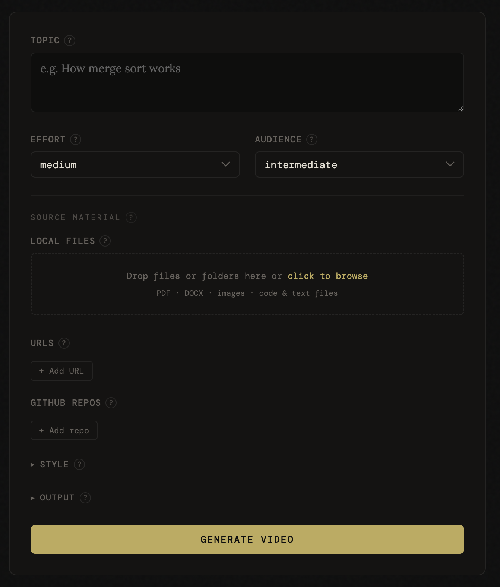
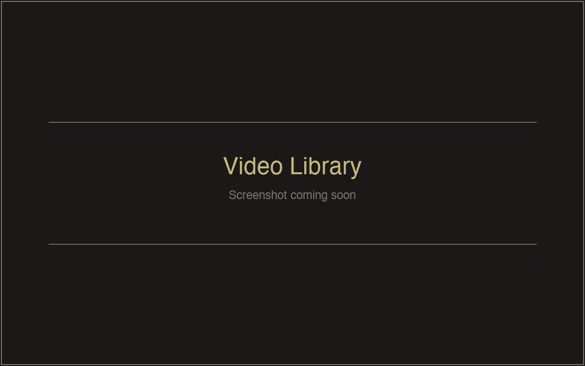

Documentation
Guide
How to use Chalkboard, from creating your first video to customizing every detail. For terminal workflows, see the CLI reference.
Getting started
Quick start
Prerequisites: Python 3.10+, Docker, and ffmpeg.
Install
git clone https://github.com/nicglazkov/Chalkboard.git cd Chalkboard pip install -r requirements.txt cp .env.example .env # add your ANTHROPIC_API_KEY
Start the web UI
python run_server.py # Open http://localhost:8000
First run only: Docker builds the render image automatically (~30 seconds). Subsequent runs use the cached image.
API keys: ANTHROPIC_API_KEY is required. Kokoro TTS is free and
runs locally, so no extra key is needed. If you prefer OpenAI voices, add OPENAI_API_KEY to your
.env file. See TTS backends for all options.
Web UI
Creating a video
Open http://localhost:8000 after starting the server. The form has three main fields and a collapsible Advanced section. Hit Generate to start. The pipeline runs in the background, so you can close the tab and come back later.
Main
| Field | Options | Description |
|---|---|---|
| Topic | Free text | What you want explained, e.g. "how B-trees work" |
| Effort | low, medium, high |
Validation depth and whether web research runs. See effort levels. |
| Audience | beginner, intermediate, expert |
Controls vocabulary, pacing, and assumed background knowledge. |
Advanced
| Field | Default | Description |
|---|---|---|
| Tone | casual | Narration style: casual, formal, or socratic. |
| Theme | chalkboard | Visual color palette. See themes. |
| Template | none | Animation layout for specific content types. See templates. |
| Speed | 1.0 | Narration speed multiplier. |
| File uploads | none | Drag-and-drop zone for local files as source material. See file uploads. |
| URLs | none | Web pages to fetch and use as source material. |
| GitHub | none | Repositories to pull README from as context. |
| QA density | normal | How many frames Claude inspects after rendering: zero, normal, high. |
| Burn captions | off | Hardcode subtitles into the video. SRT file is always generated regardless. |
| Generate quiz | off | Produce comprehension questions as a JSON file. |

The job creation form.
Web UI
Live progress
Once a job starts, the UI switches to a stage-by-stage progress view driven by server-sent events (SSE). Each pipeline stage lights up as it completes:
- Research: web search for source material (high effort only)
- Script: Claude writes the narration
- Fact check: Claude reviews the script for accuracy
- Animation: Claude generates Manim scene code
- Code review: syntax check and semantic review of the animation
- Layout check: headless dry-run validating bounding boxes and timing
- Render: Docker renders the animation, TTS generates audio, ffmpeg merges them
Each stage retries automatically (up to 3 attempts) if validation fails. Feedback from the validator is fed back to the generator so it can correct the issue.
When the job finishes, a video player appears inline with download links for the MP4, captions, script, and quiz (if enabled).
Pipeline stages completing in real time (timelapse).
Web UI
Video library
Navigate to /library or click Library in the header to browse all
generated videos.
- Grid view with thumbnails extracted from each video
- Search by topic or title to find specific videos
- Video detail page with inline player, metadata, and download links
- Delete videos from the context menu on each card
Old runs created before the library existed are automatically backfilled at startup. Any
directory in output/ with both manifest.json and final.mp4 is indexed.

The video library with search and thumbnail grid.
Source material
File uploads
The Advanced options panel includes a drag-and-drop upload zone. Drop individual files or entire folders to use them as source material. The pipeline will build the animation from your content rather than Claude's training data alone.
Supported file types: text and code files (.py, .js,
.md, .yaml, and many more), images (.png, .jpg,
.webp, .gif), PDFs, and Word documents (.docx).
Size limits
| File type | Max size |
|---|---|
| Text / code | 2 MB |
| Images | 5 MB |
| PDFs | 20 MB |
| DOCX | 10 MB |
| Total (all files) | 24 MB |
You can also paste URLs and GitHub repos in the Advanced options panel. These are fetched server-side and injected as context alongside uploaded files. For CLI context injection (local directories, glob exclusions, token reporting), see the CLI reference.
Animation
Templates
Templates inject layout and visual convention guidance into the animation generator, producing more structured results for specific content types. Select a template in the Advanced options panel, or omit it to let the AI choose freely.
algorithm
Sorting & searching
Array cells, pointer arrows, step counter, and explicit swap animations. Best for sorting, searching, and graph traversal.
code
Code walkthroughs
Manim Code object, incremental line reveal, callout annotations. Best for implementation explainers.
compare
A vs B trade-offs
Two labeled columns, consistent color per side, summary row at end. Best for technology comparisons.
howto
Step-by-step guides
Numbered steps revealed progressively, active step highlighted, completed steps dimmed. Best for setup guides, recipes, and processes.
timeline
Chronological events
Horizontal axis with dated markers animated left to right. Best for history, version timelines, and biographical sequences.
Quality
Effort levels
The Effort setting controls how thorough the validation pipeline is and whether web research runs before scripting.
| Level | Fact-check | Web search | Segments |
|---|---|---|---|
| low | Light check, obvious errors only | Never | 3-4 |
| medium | Spot-check key claims | No | 4-6 |
| high | Thorough | Dedicated research step before scripting | 5-8 |
With high effort, a dedicated research agent runs web searches before the script is written. Sources found are cited in the terminal output. If the search fails or results are clearly off-topic, Chalkboard prints a warning and continues on training data. The pipeline never aborts because of a search failure.
Quality checks
Two automatic quality checks run on every video, regardless of effort level.
pre-render
Layout check
Dry-runs the scene headlessly inside Docker and validates every segment's bounding boxes (off-screen, colliding elements) and animation timing against the audio budget. Violations are fed back to the animation generator and retried automatically.
post-render
Visual QA
Samples frames from the rendered video and asks Claude to flag overlapping text, off-screen content, or readability issues. Errors trigger scene regeneration and re-render (up to 2 attempts). Control sampling density in Advanced options.
Voiceover
TTS backends
Set TTS_BACKEND in your .env file. The .env.example
ships with openai, which works on all platforms. The code default when unset is
kokoro.
| Backend | Quality | Cost | Requires |
|---|---|---|---|
| kokoro | Best | Free | PyTorch ≥ 2.4, espeak-ng |
| openai | Great | API | OPENAI_API_KEY |
| elevenlabs | Great | API | pip install elevenlabs, ELEVENLABS_API_KEY |
Intel Mac users: PyTorch 2.4+ has no x86_64 macOS
wheels. Use openai or elevenlabs instead.
To install espeak-ng for Kokoro: brew install espeak-ng (macOS) or
apt install espeak-ng (Linux).
Visual style
Themes
Themes control the color palette of the rendered animation. Select a theme in the web UI form
or pass --theme on the CLI.
chalkboard
Chalkboard
Dark green background with chalk-white text and warm accent colors. The default theme, inspired by classroom blackboards.
light
Light
Clean white background with dark text and blue accents. Good for professional presentations and bright environments.
colorful
Colorful
Dark background with vibrant, high-contrast colors. Best for eye-catching social media content and visual variety.